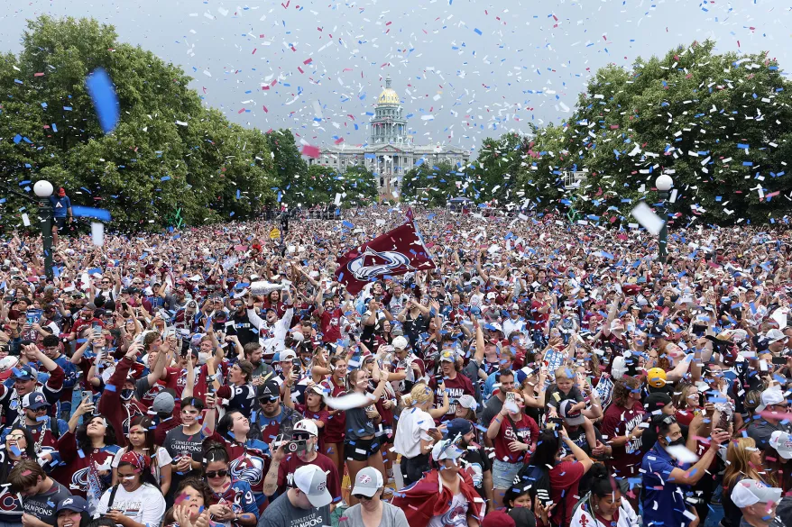
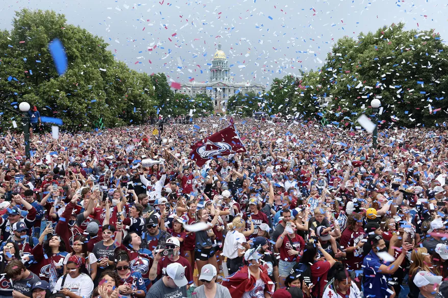

The NHL playoff history for The Colorado Avalanche has been been less than stellar.
The team has failed to make it out of the second round for the last three seasons, having lost to the Sharks, the Stars, and the Knights respectively. In 2019, the Avs lost to the San Jose Sharks in a grueling series that lasted 7 games. Avalance captain, Gabriel Landeskog, scored a game winner in game six to force a game 7, which ended in defeat for the future champions. The loss was not without controversy as the officals and the league would have to explain an offsides call that cost the Avs a goal during the contest, in the days to follow.

The Dallas Stars
In 2020 the future champions would suffer yet another second round exodus at the hands of the Dallas Stars. This year's playoff games would be played in the "bubble", due to Covid 19 running rampant in league and accross the country...(notice the empty seats in the picture below). In addidtion to the pandemic, the Avalache were fighting the injury bug and played most of this series without their starting goal tender. The team having failed to get out of the second round once again, has now earned the reputation of being a good regular season team that can't win when it matters most.

The Las Vegas Golden Knights
The match up vs the Knights in 2021 might be the toughest pill to swallow of the three second round exits. The good guys had a 2 - 0 series lead and all the momentum heading into game 3. The Avs lead for much of the game, taking a lead late into the 3rd period then... disaster. The Knights tied it up, eventualy won the game and the series, rattling off four consecutive wins to close it out. Needless to say, this was devastating to the team and its fan base, both of which would have to wait an entire offseson/regular season to get back to the promised land.

Destiny fulfilled!
In 2022, the Colorado Avalance proved to be a juggernaught that rampaged its way through The Stanley Cup Playoffs. The good guys proved to be most formmidable on the road, losing only a single game away from home. The team of stars and a sound coaching staff finally delivered the city of Denver its third Stanley Cup, after 21 years. The team and staff were joined by over 500,000 fans during the celebratory victory parade in the heart of downtown Denver. The Avs have proven that teamwork, believing in one another, and hard work can accomplish the seeming impossible!
 
